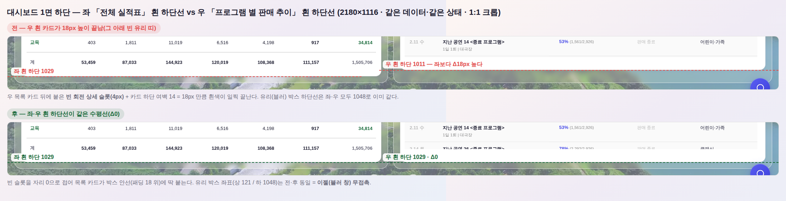
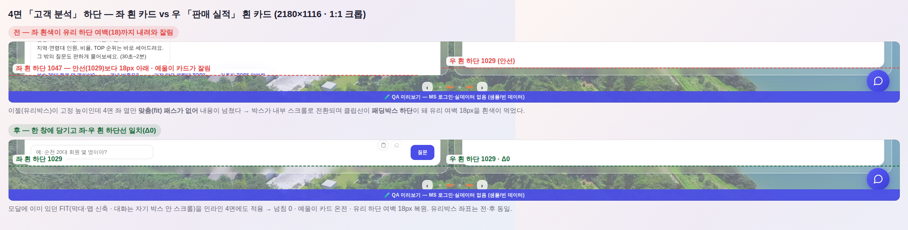

지시(운영자 캡처 + 수기): 「창 크기 표기한 공간에 맞춰줘. 그리고 무슨 작업을 하든 흰색은 좌측 전체 실적표의 저 부분, 그리고 블러 창은 절대 안 건드리게.」
캡처의 파란 선 = 좌 「전체 실적표」 흰 카드 하단선. 그 선에 우 열 흰 카드가 안 닿고 18px 높이 끝나 있었다.
아래 버튼을 눌러 원인을 직접 만져볼 수 있다 — 슬롯 상태(상세 없음/있음)와 접기(전/후)를 조합해 보면 어느 조합에서 선이 어긋나는지 보인다.
← 슬롯 상태 · 아래 두 판이 같은 상태로 같이 바뀐다
전 — 슬롯이 비어도 「떠 있다」로 읽음(여백 14 + 슬롯 4)
후 — 빈 슬롯은 자리 0으로 접음(마지막 흰 도형 = 목록 카드)
실제 화면 실측 — 2180×1116 · 같은 목데이터 · 1:1 크롭

실측(px)
좌 유리박스
우 유리박스
좌 흰 하단
우 흰 하단
흰 Δ
전(수정 전)
121 / 1048
121 / 1048
1029
1011
18.0
후(수정 후)
121 / 1048
121 / 1048
1029
1029
0.0
2차(260803-9) — 「다른 각 창도 넘어간 거 많음」 전수 감사
1차는 1면만 고쳤다. 운영자 지시로 전 면(1·3·4면) × 좌·우 열을 같은 잣대로 실측한 결과 —
「눈에 보이는 흰 하단」 = 배경이 실제로 칠해진 요소 중 조상 overflow로 잘리는 하단이 가장 아래인 것 — 6건이 더 어긋나 있었다.
면 · 크기
좌 안선/보임
우 안선/보임
전 Δ
후 Δ
4면 2180×1116
1029 / 1047
1029 / 1029
18.0
0.0
4면 1600×900
813 / 831
813 / 813
18.0
0.0
4면 1920×740
653 / 671
653 / 653
18.0
0.0
1면 1920×740
653 / 664
653 / 653
11.0
0.0
3면 1920×740
659 / 675
659 / 659
16.1
0.1
1·3면 1600×680
599 / 617
599 / 599
18.0
0.0

공통 원인 = 「박스가 스크롤에 들어가면 유리 하단 여백을 흰색이 먹는다」 — 박스에 overflow-y:auto가 걸리면
브라우저 클립선은 패딩박스 하단이라, 넘치는 열은 흰색이 유리 여백(패딩 18)까지 내려온다. 반대 열은 안선에서 끝나니 최대 18px 어긋난다. 수정 3점 — ① 4면: 모달에만 있던 FIT(막대·맵 신축 · 대화는 자기 박스 안 스크롤)을 인라인 4면에도 적용(이젤이 높이를 확정해 준 경우만) + 낮은 화면에서 두 카드가 줄바꿈될 땐 그 줄이 자기 안에서 스크롤.
② 전 면 공통: 그래도 넘치면 스크롤을 박스가 아니라 「그 열의 마지막 자식」 안으로 옮긴다(목표 높이 = 안선 − 자기 상단 = 멱등) → 프레임·패딩·보더 불변, 흰 라인은 언제나 안선.
③ 게이트: 「흰 도형」 판정을 클래스 목록 → 실제로 칠해졌는지 + 잘리는 하단으로 교체(4면은 그 클래스가 없어 아예 검사조차 안 되고 있었다) · min(흰, 안선) 보정 폐지(넘침을 가리던 식).
킬테스트: 1차 머지본에 새 게이트를 걸면 「4면: 흰 카드 하단 수평선 Δ18.0px (좌 1047 / 우 1029)」로 정확히 FAIL.
1차(260803-8) — 1면 빈 회전 상세 슬롯
원인 — 회전 상세(_srailUhaSync)는 1면에 데이터가 있으면 늘 켜진다(display:flex). 그런데 본문
#srail-uha-body가 안 그려지면 그 슬롯은 자기 여백 4px(.srail-uha-body{padding:4px 0 0})만 차지한다 —
눈에는 아무것도 없다. 구판 _srailAlignTop은 그 4px을 「상세가 떠 있다」로 읽어 #547의 여백 0 규약을 풀었고,
목록 카드는 하단 여백 14 + 슬롯 4 = 18px 만큼 안선에 못 닿은 채 끝났다. 게이트가 못 잡은 이유 — smoke_layout.mjs의 「마지막 흰 도형」 후보에 #rail-yrm-uha가 들어 있어,
투명한 4px 껍데기를 흰 도형으로 세고 Δ0으로 통과시켰다(이 사각이 같은 신고가 반복된 이유). 수정 — ① 본문이 비면 슬롯을 자리 0(높이 0·클립)으로 접고 「꺼짐」으로 본다 → 마지막 흰 도형 = 목록 카드 → 박스 안선 밀착.
② 상세가 그려지면 같은 패스가 즉시 원복(_srailUhaShow 끝 재정렬 훅).
③ 게이트도 빈 슬롯을 흰 도형에서 제외 — 킬테스트: 수정 전 index.html에 새 게이트를 걸면 「흰 카드 하단 수평선 Δ18.0px」로 정확히 FAIL. 블러 창(이젤) 무접촉 — 유리박스 좌표는 전·후 동일(상 121 / 하 1048 · 좌우 Δ0). 바뀐 건 박스 안의 목록 카드 높이뿐이다.